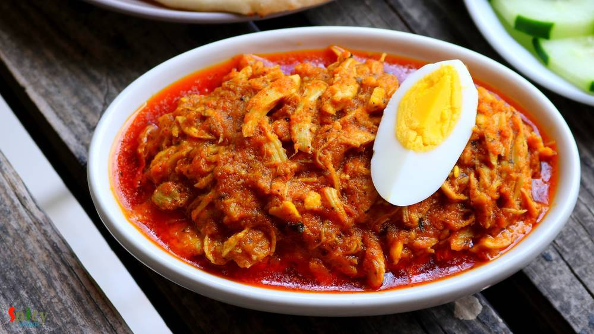

Simple and Easy Recipes

Veg Recipe
Mar 19, 2019
Paneer Bhapa is a very easy and flavorful Bengali veg dish which goes best with steamed rice. Bhapa means steamed. Any spicy bhapa dish like Chingri bhapa, Ilish bhapa etc will call for two important ingredients - Green chili and Mustard oil, without these two 'bhapa' will taste bland. In this Paneer Bhapa recipe, paneer will be steamed in mustard, poppy seeds, coconut and yogurt gravy within a st ...


Nonveg Recipe
Mar 14, 2019
Chicken Bharta was prepared last weekend in our lunch. The recipe is Punjabi inspired Bengali dish. A very tasty shredded (pulled) chicken preparation which is famous throughout India. It has onion and tomato based gravy with beautiful flavor of kasuri methi and Garam masala. Of course, how can I forget about the Boiled Egg? To make an excellent Chicken Bharta you have to finish it off with boiled ...

Veg Recipe
Mar 11, 2019
You can find so many variety of Chum Chum recipe on internet. They all taste good, I can assure you that. Today what I am going to share is Kolkata special 'Lord Chom Chom' sweet recipe, in which cylindrical shaped Paneer will be cooked in sugar syrup then they will get a good coat of thick Malai (thickened milk) and Mawa (dried milk). In one word Chom Chom = a piece of heaven. Trust me I am not k ...

Nonveg Recipe
Mar 7, 2019
A super spicy and fiery indo-chinese starter is 'Chicken 65'. In southern part of India, few restaurants first started selling this Chicken 65 as a quick snack and now, people from all around the world knows about Chicken 65. In USA, we get delicious Chicken 65 from Indian restaurants, it is one of our favorite appetizer and that is why I made my mind to make this dish in my kitchen. You can make ...

Veg Recipe
Mar 2, 2019
Doi Potol is a traditional Bengali vegetarian delicacy. Potol is pointed gourd or parwal. In this recipe pointed gourd will be cooked in a spicy and tangy yogurt based sauce. I didn't use onion and garlic in this, but you can if you wish. Doi Potol goes best with plain steamed rice. I kept the recipe very simple and easy. Do try this in your kitchen and let me know how it turned out for you.
")
Nonveg Recipe
Feb 27, 2019
If you are a fish lover, then 'fish fingers' should be on the top of your list. These crispy, spicy fingers can steal your heart in one bite. In Kolkata, every street food center, college canteens, restaurants sell these lip smacking Fish Fingers with chili sauce or Kasundi. You can use any kind of white fish fillet in this recipe. Oh boy, the taste is unbeatable and unforgettable !! There are no ...

Nonveg Recipe
Feb 26, 2019
Dalna means a curry which contains potato with other vegetables or protein. But potato is a must for Dalna. Some also call it Torkari. Summer is coming and so is sweaty tiredness with it. If you don't want to spend long time in the kitchen, no worries! I have a solution. Dimer Dalna or Egg and Potato Curry is the most simple and easy recipe which can easily feed a crowd. Anyone can enjoy a good, t ...
")
Nonveg Recipe
Feb 23, 2019
I guess you all, who follow my blog, already know that we have a 'thing' for Biriyani. Be it with chicken / mutton / prawn we are always ready to enjoy. I've already posted Kolkata style biriyani recipe which is much easier than Hyderabadi style as you need to have full confidence on timing and proportions. In Kolkata we make the chicken with gravy first and then give 'dum' with cooked rice, where ...

Veg Recipe
Feb 18, 2019
Rosogolla is cottage cheese balls cooked and soaked in suger syrup. Rosogolla is a Bengali delicacy. You will get so many flavors of them in Kolkata sweet shops, like Nolen gur / Rose / Mango / Strawberry / Paan / Cardamom and what not! But one of my favorite is Sponge Rosogolla which is plain and simple. They are literally light and soft like sponges! If you follow every tips of this recipe you w ...

Nonveg Recipe
Feb 14, 2019
Mutton korma is an old school and popular non veg main course item from Old Delhi. Any korma recipe has onion and yogurt based sauce, some even add nut paste also. Last weekend I had a party in my house. Among all the foods, the main attraction was Mutton Korma. Korma is very rich itself. Always serve this with light rice item or naan. Do give it a try and let me know how it turned out for you.